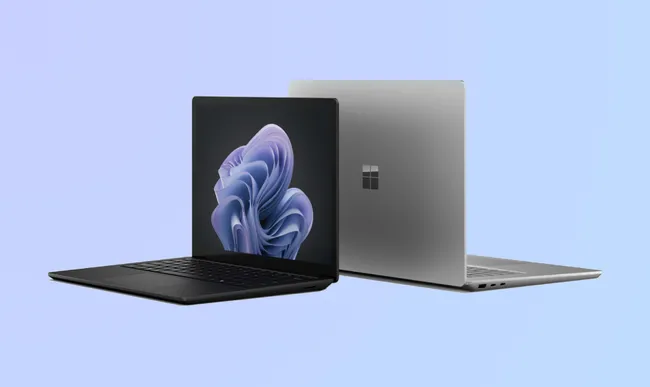

Mac and Windows Laptops
Mac Laptops!

The Top View of the Mac Laptop. Sleek, and ready to be used!
The Top 3 Most Popoular Mac Laptops are:
-
Apple 13" MacBook Pro w/ 2.5GHz Dual Core i5, 4GB of RAM and 500GB of
Storage
- Apple MacBook Pro MD313LL/A 13.3"-Inch" Laptop
-
Apple MacBook Air 13.3" Laptop MD760LL/B, 1.4 GHz Intel 15 Dual Core
Processor
Average Prices for Mac Laptops
Click here to be redirected to Apple's site
Windows Laptops!

You can also pair a wirelass smart mouse with your laptop for maximum
productivity
The Top 3 Most Popular Windows Laptops are:
-
Acer Aspire 5 A515-46-R3UB | 15.6" Full HD IPS Display | AMD Ryzen 3
3350U Quad-Core Mobile Provessor | 4GB DDR4 | 128GB NVMe SSD | WiFi 6 |
Backlit KB | FPR | Amazon Alexa | Windows 11 Home in S mode
-
HP 15" Laptop, 11th Generation Intel Core i5-1135G7, Intel Iris Xe
Graphics, 8 GB RAM, 256 GB SSD, Windows 11 Home (15-dy2024nr, Natual
Silver)
-
HP Stream 14" HD(1366x768) Display, Intel Celeron N4000 SDual-Core
Processor, 4GB RAM, 64GB eMMC, HDMI, WiFi, Webcam, Bluetooth, Win10 S,
Royal Blue(Renewed)
Average Prices for Windows Laptops
Click here to be redirected to Window's site